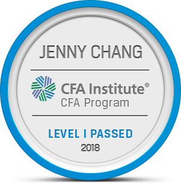

iOS Developer experienced working with both Objective-C and Swift. Recently moved from London (UK) where I worked in finance/data analysis roles. At Fitch, I learnt how to create macros using Visual Basic and that was where I discovered how much I enjoy programming. I thrive in situations where I’m out of my comfort zone and feel pressured to push myself, as demonstrated through passing CFA Level I with no prior financial knowledge.
jennychangiosdev@gmail.com
https://github.com/jennychang-dev
https://www.linkedin.com/in/jenny-chang-a72a44130/
British
Contributing to our market intelligence service, gathering time series data and producing forecasts to support the Global Macro Research specialised in 22 different sectors. Liaising with the sales team to explain forecasting methodologies and promote business development.
Experience using Caseworker and Parliamentary Research Service platforms. Drafted letters from scratch to constituents regarding many political issues and led constituency surgeries.
| Dates | Programme |
|---|---|
| Jan 2019 - Mar 2019 | iOS Development Bootcamp Programme - Lighthouse Labs (Vancouver, BC) |
| 2013 - 2016 | Philosophy, Politics & Economics - University of York (York, UK) |
| 2006 - 2013 | South Hampstead High School (London, UK) |
Passed Level I of CFA Programme (300+ hours)
